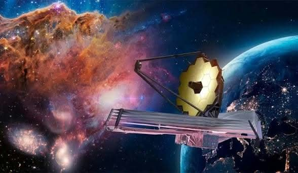
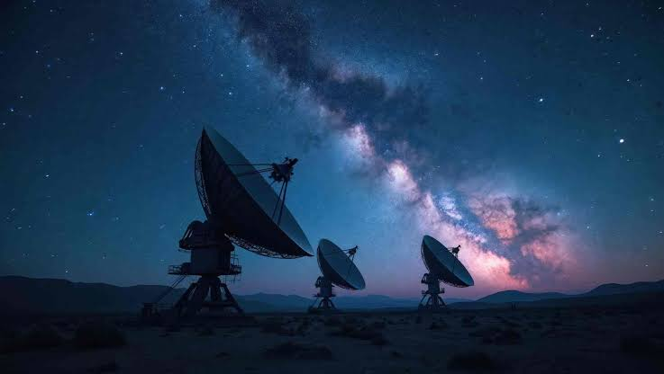

Tabla de descubrimientos recientes
Un vistazo rápido a algunos hallazgos importantes del espacio.
| Descubrimiento |
Fecha |
¿Qué es? |
| TOI-700 e |
Enero de 2023 |
Exoplaneta de tamaño similar a la Tierra. |
| JADES-GS-z14-0 |
Mayo de 2024 |
Una de las galaxias más lejanas observadas. |
| Agua en K2-18 b |
Septiembre de 2019 |
Se detectó vapor de agua en su atmósfera. |
Novedades científicas
La exploración espacial utiliza telescopios, sondas y observatorios para estudiar planetas, estrellas y galaxias. Estos son algunos temas importantes de investigación.
Telescopio espacial James Webb
El telescopio James Webb estudia galaxias lejanas, atmósferas de exoplanetas y regiones donde se forman estrellas. Sus observaciones ayudan a comprender cómo evolucionan los sistemas planetarios.

Tema de investigación: observaciones del telescopio espacial.
Exoplanetas
Los exoplanetas son planetas que orbitan estrellas distintas del Sol. Los científicos estudian su tamaño, composición y distancia a su estrella para conocer mejor sus características.

Tema de investigación: búsqueda y caracterización de exoplanetas.
Búsqueda de señales en el espacio
Proyectos científicos analizan señales procedentes del espacio. Una señal inusual necesita comprobarse y estudiarse; por sí sola no demuestra que exista vida extraterrestre.

Tema de investigación: escucha y análisis de señales astronómicas.